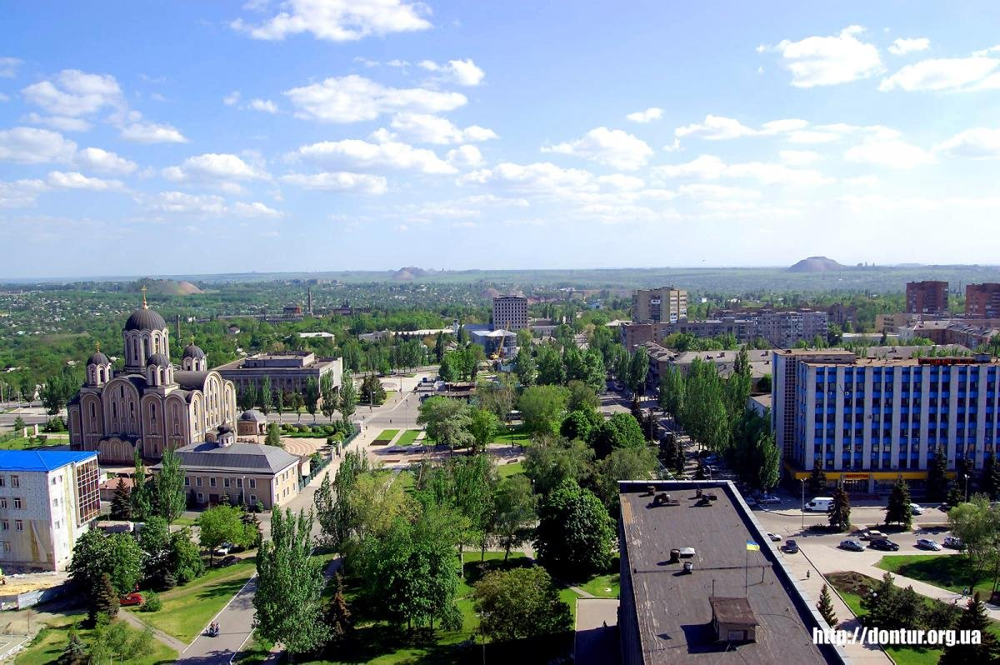

ГОРОД МАКЕЕВКА
Город Макеевка находится в Донецкой области и географически расположен в юго-восточной части республики. Он граничит с самим Донецком и визуально, практически сливается с ним. Фактически это город-спутник. Как и многие города этой части Украины район представляет из себя слившиеся воедино шахтёрские посёлки. Численность населения составляет почти 400 тысяч жителей. Однако за последние 20 лет XX века оно сократилось на 11%. как и во многих небольших городах этого района, население постепенно состаривается из-за оттока отсюда молодёжи. Население представляет собой сплав более сотни национальностей, около 50% из которых русские, а 46% украинцы. Национальный язык используют всего одна десятая часть всех макеевчан. Экономика города держится преимущественно на тяжёлой промышленности. Здесь ведётся добыча каменного угля, выплавка чугуна и стали, работает металлургический комбинат, два завода по производству коксохимической продукции, развито машиностроение, производят крепления для горных выработок, горношахтовое оборудование, различные металлоконструкции, и др.

Герб Макеевки представлен в виде испанского щита, увенчанного башенной короной с тремя зубцами. Он разделён на три части. Нижняя – чёрная, с двумя скрещенными золотыми молотами. Инструменты символизируют угольную отрасль и её историческое значение в становлении населённого пункта. Под ними начертано число 1690, указывающее дату основания города. Среднее поле содержит золотую полосу, разделяющую щит. Она воплощает металлургическую промышленность. В верхней части, на голубом фоне, показан стилизованный восход солнца. Светило имеет шесть серповидных лучей. Конструкцию окружает зелёная лента с надписью «МАКЕЕВКА» золотыми буквами. Она вплетена в венок из ковыли. Художественная композиция утверждена решением №16/4 сессии городского совета от 20 апреля 2000 года.

Флаг Макеевки выполнен в виде прямоугольного голубого полотнища. Левый верхний угол содержит флаг Донецкой области. Он окружён четырьмя звёздами в белой окантовке. Чёрная символизирует угольную промышленность, золотая – металлургическую отрасль. Зелёная воплощает богатство природы, серебряная – духовные традиции. Флаг утверждён 20 апреля 2000 года.
Новости

Подробнее В сентябре в Саранске пройдет Межрегиональный фестиваль "Худсовет", сообщает пресс-служба. Среди участников — Донецкий республиканский академический молодежный театр из Макеевки. Он представит абсурдистскую комедию по пьесе Д. Данилова "Человек из Подольска". "Спрос на спектакль Донецкого РАМТа не меньше, чем на театры столиц – горожане признаются, что тем самым хотят поддержать коллектив в непростых для творчества обстоятельствах", — говорится в пресс-релизе.

Подробнее Первый центр для поддержки подростков создается в Донецке, еще два откроют в Макеевке и Мариуполе, сообщила на форуме "Подростки 360" во Владивостоке уполномоченный при президенте России по правам ребенка Мария Львова-Белова. "Одним из направлений (поддержки детей ДНР и ЛНР) станет создание подростковых центров. Я недавно была в Донецке, и мы уже начали обустраивать первый подростковый центр, который сможет принять ребят. В ближайшее время - с (главой ДНР) Денисом Пушилиным договорились о создании центров в Макеевке и Мариуполе", - сказала омбудсмен.